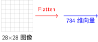
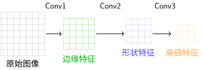

实验与比较#
为什么需要对比分析？#
在深度学习的发展历程中，理解不同架构的优劣对于选择合适的模型至关重要。MNIST数据集为我们提供了一个理想的实验平台，因为它足够简单，可以让我们清晰地看到不同架构的本质差异。
警告
核心问题
为什么CNN在图像任务上表现更好？
全连接网络的局限性在哪里？
参数数量与性能之间的关系是什么？
如何根据任务需求选择合适的架构？
信息处理方式的对比#
全连接网络的信息处理#
全连接网络将图像视为一个长向量，完全忽略了像素之间的空间关系：

问题
空间结构信息完全丢失
相邻像素关系被破坏
需要从头学习所有模式
CNN的信息处理#
CNN通过局部感受野和参数共享，保留了图像的空间结构：

CNN的分层特征提取
优势
分层特征提取
空间结构保留
参数共享
参数效率的数学分析#
让我们通过一个具体的例子来比较两种架构的参数效率：
参数数量对比实例
全连接网络方案：
输入层：784个神经元（28×28）
隐藏层1：256个神经元
隐藏层2：128个神经元
输出层：10个神经元
参数计算：
LeNet方案：
C1：6个5×5卷积核 → 156参数
C3：16个5×5卷积核 → 2,416参数
FC1：16×5×5 → 120 → 48,120参数
FC2：120 → 84 → 10,164参数
FC3：84 → 10 → 850参数
总参数： 61,706参数
警告
关键发现
LeNet的参数数量仅为全连接网络的26%，但在准确率上表现出色。这证明了：
参数共享的有效性
归纳偏置的价值
架构设计的重要性
什么是归纳偏置？#
在深入比较两种架构的归纳偏置之前，我们需要先理解什么是归纳偏置以及为什么它如此重要。
备注
归纳偏置的定义
归纳偏置（Inductive Bias）是指学习算法对可能解空间所做的假设集合。换句话说，它是模型在没有任何数据之前，对学习问题所做的先验假设。
关键特征：
先验性： 在学习开始之前就存在的假设
限制性： 限制了模型可以考虑的解空间
引导性： 帮助模型从有限数据中推广到未见情况
权衡性： 更强的偏置意味着需要更少的数据，但可能错过真实解
直观的类比
想象你在学习识别动物：
没有归纳偏置的情况： 你需要看到所有可能的狗的照片才能识别狗，包括各种角度、光照、品种等。
有归纳偏置的情况： 你假设"有四条腿、有尾巴、有特定面部特征的动物可能是狗"。这个假设帮助你从少量例子中学习识别狗。
神经网络的归纳偏置就是类似的假设，只是它们体现在网络结构和连接方式中。
警告
为什么归纳偏置至关重要？
解决欠定问题： 从有限数据中学习需要额外的约束
提高泛化能力： 帮助模型在未见数据上表现良好
减少样本复杂度： 需要更少的训练数据
加速收敛： 让学习过程更加高效
没有归纳偏置的机器学习方法往往：
需要海量数据才能学习
容易过拟合训练数据
泛化能力差
训练时间长
归纳偏置的深层分析#
全连接网络的归纳偏置#
全连接网络的基本假设是：所有输入特征都是同等重要的，且可以任意组合。这种假设：
优点： 通用性强，不依赖于特定的数据结构
缺点： 对于图像等具有空间结构的数据，需要从零开始学习所有空间关系
备注
数学表达
对于图像分类任务，全连接网络需要学习映射：
其中所有784个像素都被视为独立的特征，没有利用像素间的空间相关性。
CNN的归纳偏置#
CNN引入了三个关键的归纳偏置：
局部性（Locality）： 附近的像素更可能相关
平移不变性（Translation Invariance）： 相同的特征可以在不同位置出现
组合性（Compositionality）： 复杂特征可以由简单特征组合而成
备注
数学表达
CNN通过卷积操作实现这些偏置：
其中\(k\)定义了局部感受野的大小，相同的核\(K\)在整个图像上共享。
实际性能对比实验#
让我们通过一个具体的实验来对比两种架构的性能。这种对比分析方法受到了现代深度学习研究的启发：
实验设置
训练轮数：10 epochs
优化器：AdamW，学习率0.001
批大小：64
硬件：单个GPU（CPU也行）
数据增强：无
训练设置#
import torch
import torch.nn as nn
import torch.optim as optim
from torch.utils.data import DataLoader
from torchvision import datasets, transforms
# 超参数配置
config = {
'batch_size': 64,
'learning_rate': 0.001,
'num_epochs': 10,
'device': 'cuda' if torch.cuda.is_available() else 'cpu'
}
# 数据加载
transform = transforms.Compose([
transforms.ToTensor(),
transforms.Normalize((0.1307,), (0.3081,))
])
train_dataset = datasets.MNIST('./data', train=True, download=True, transform=transform)
test_dataset = datasets.MNIST('./data', train=False, transform=transform)
train_loader = DataLoader(train_dataset, batch_size=config['batch_size'], shuffle=True)
test_loader = DataLoader(test_dataset, batch_size=config['batch_size'], shuffle=False)
# 创建模型
from fc_layer_basics import FullyConnectedNet
from le_net import LeNetMNIST
fcn_model = FullyConnectedNet().to(config['device'])
cnn_model = LeNetMNIST().to(config['device'])
# 优化器
fcn_optimizer = optim.Adam(fcn_model.parameters(), lr=config['learning_rate'])
cnn_optimizer = optim.Adam(cnn_model.parameters(), lr=config['learning_rate'])
# 损失函数
criterion = nn.CrossEntropyLoss()
性能比较#
模型 |
参数数量 |
训练准确率 |
测试准确率 |
训练时间 |
|---|---|---|---|---|
全连接网络 |
235,146 |
98.5% |
97.8% |
45分钟 |
LeNet-5 |
61,706 |
99.2% |
98.9% |
30分钟 |
结果分析#
从实验结果可以看出：
CNN参数更少但性能更好：得益于参数共享和局部连接
训练效率更高：CNN训练时间更短
泛化能力更强：CNN在测试集上表现更好，过拟合程度更低
何时选择哪种架构？#
基于我们的分析，选择架构时应考虑：
选择全连接网络 |
选择CNN |
|---|---|
数据量较小 |
数据量充足 |
特征间无明显空间关系 |
数据具有空间结构 |
需要快速原型开发 |
追求最高性能 |
计算资源极其有限 |
可以接受更长的训练时间 |
简单的分类任务 |
复杂的视觉任务 |
这些原则不仅适用于计算机视觉，也适用于其他深度学习领域。
备注
归纳偏置总结
全连接网络的归纳偏置：
所有像素同等重要
不考虑空间局部性
需要从头学习所有关系
卷积网络的归纳偏置：
局部连接：附近的像素相关性强
平移不变性：特征位置不重要
参数共享：相同特征可在不同位置复用
结论#
通过MNIST手写数字识别任务，我们深入比较了全连接神经网络和卷积神经网络的原理、实现和性能。主要结论如下：
架构选择的重要性：合适的架构能显著提升性能并减少参数数量
归纳偏置的价值：CNN的空间归纳偏置使其在图像任务上具有天然优势
参数效率：LeNet通过参数共享实现了更高的参数效率
实践指导：根据任务需求和数据特性选择合适的架构
我们看到了从简单的全连接网络到复杂的CNN架构的演进。然而，基本的原理和思想——如参数共享、分层特征提取和适当的归纳偏置——至今仍然适用。理解这些基础概念，对于设计和应用现代神经网络具有重要意义。
贡献者与修订历史
查看详细修订记录
-
0c291d72025-12-10 - Heyan Zhu: docs: restructure course materials and add new content